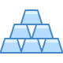

«Норникель» — лидер горно-металлургической промышленности России, а также крупнейший производитель палладия и первоклассного никеля и один из крупнейших производителей платины и меди. «Норникель» также производит кобальт, родий, серебро, золото, иридий, рутений, селен, теллур и серу.
Направления деятельности группы компаний «Норникель»
геологоразведка, добыча и переработка
полезных ископаемых

производство и реализация цветных
и драгоценных металлов
28 стран потребляют продукцию компании. Ее приобретают более 400 компаний-партнеров.
Основные подразделения группы компаний «Норникель» — это вертикально интегрированные горно-металлургические производства. С 2020 года подразделения объединены в дивизионы, что позволяет ускорить принятие решений и повышает уровень ответственности руководителей на площадках.
Дивизионы
В рамках функционирования Норильского дивизиона ведется полный цикл производства продукции: от добычи и обогащения руды до рафинирования и аффинажа.
Наряду с производственными предприятиями группа имеет собственную сбытовую сеть, топливно-энергетические и транспортные активы, комплекс исследовательских и проектных подразделений, а также уникальный арктический транспортный флот.
Инвестиционная привлекательность
Привлекательность бизнес-модели «Норникеля» обеспечена наличием богатой ресурсной базы с высоким содержанием всех основных металлов в руде и низкой себестоимостью производства в сравнении с конкурентами.
Ценные бумаги компании — один из наиболее ликвидных инструментов на российском фондовом рынке и за рубежом. Акции «Норникеля»
торгуются на российском фондовом рынке с 2001 года. Они включены в котировальный список первого уровня ПАО «Московская биржа»,
а также в список ценных бумаг, допущенных к торгам ПАО «Санкт-Петербургская биржа».
2 472 млрд руб.
рыночная капитализация «Норникеля»
на конец 2023 года
15 766 руб.
средняя цена акции в 2023 году
В 2023 году «Норникель» разместил пятилетний выпуск биржевых облигаций на 60 млрд руб. с плавающей процентной ставкой, привязанной к RUONIA.
В 2023 году компания выплатила поставщикам капитала 171,6 млрд руб. в качестве процентов и дивидендов.
Социальная политика
«Норникель» руководствуется социальной миссией и придерживается принципов корпоративной социальной ответственности в выстраивании эффективных взаимоотношений с обществом в целом, с местными сообществами в регионах присутствия и с персоналом компании.
Компания — один из наиболее ответственных работодателей страны. С 2018 по 2023 годы средняя заработная плата сотрудников выросла на 62%, что значительно выше роста инфляции за этот период, и превысила 184 тыс. руб. Это в 2,5 раза выше средней зарплаты по стране.
Программа ДМС охватывает 82,5 тыс. сотрудников «Норникеля». В Компании действуют разнообразные программы поддержки сотрудников, а также жилищная программа, в рамках которой работникам Компании было передано 6118 квартир.
По итогам 2023 года компания вошла в следующие рейтинги лучших работодателей:
- топ-30 рейтинга лучших работодателей HeadHunter;
- золото Рейтинга работодателей Forbes с наивысшими оценками в номинациях «Сотрудники и общество» и «Корпоративное управление»;
- № 1 среди металлургических компаний в рейтинге лучших работодателей Best Company Award компании Changellenge среди молодой аудитории;
- № 8 в рейтинге лучших работодателей Future Today по выбору студенческой аудитории;
- Гран-при премии HR brand года от компании Headhunter в номинации «Федерация Гранд» с проектом «Настоящее для будущего: развиваем инженерный потенциал»;
- Гран-при премии АКМР «Дело в людях», премия «Проект года» за проект «Настоящее для будущего: развиваем инженерный потенциал отрасли и компании»;
- три награды международной премии EMBRAS в номинациях «Имидж работодателя», «Добрые дела» и «Бизнес-результат»;
- премия «Хрустальная пирамида» за лучший бренд работодателя в области металлургии;
- две высшие награды Международной бизнес-премии WOW HR в номинациях HR Hero и Workplace.
Социальная ответственность компании также реализуется в инициативах, направленных на устойчивое развитие регионов присутствия.
Более двух десятилетий «Норникель» тесно сотрудничает с региональными властями. Заключены соглашения о сотрудничестве с Красноярским краем и Норильском, а также с Ассоциацией кольских саамов и Ассоциацией коренных малочисленных народов Таймыра.
Компания способствует развитию инфраструктуры регионов, повышает уровень жизни местных сообществ и вносит вклад в экономическое развитие регионов присутствия за счет налоговых и иных платежей в бюджеты различных уровней — в 2023 году их объем составил 281 млрд руб.